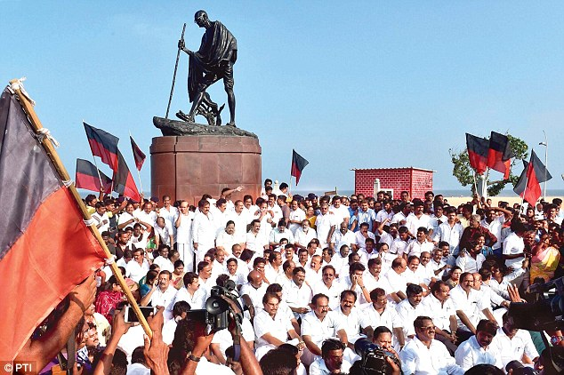
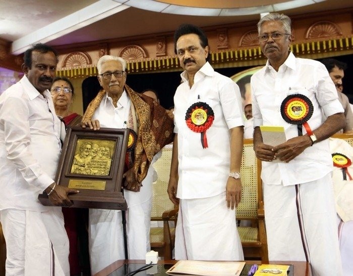

Recent Events & Initiatives

.jpg)

Together, we can make a difference in Tamil Nadu and beyond.
Learn MoreStalin is the third son of the second Chief Minister of Tamil Nadu, M. Karunanidhi, and the current Chief Minister of Tamil Nadu. Born on March 1, 1953, in Chennai, he has been an integral part of Tamil Nadu's political landscape for decades. His leadership has been instrumental in the transformation of the state, focusing on welfare, education, and infrastructural improvements.
Stalin began his political journey at a young age and has been involved in public service for over 40 years. He became the Chief Minister of Tamil Nadu in 2021, succeeding his late father. His vision for the state includes prioritizing sustainable growth, health, education, and social welfare.
Under his leadership, Tamil Nadu has seen major improvements in infrastructure, rural development, and social schemes aimed at uplifting the marginalized sections of society. His government has consistently worked towards creating a progressive, inclusive, and equitable state.
Contact Us
Ensuring quality education for all children in Tamil Nadu, from rural areas to urban centers. Our education policies have led to higher literacy rates, more accessible schools, and scholarships for underprivileged students.
Learn MoreWe have established free healthcare services for the poorest, while improving hospital facilities for the general population. Our healthcare schemes are aimed at providing quality care to all citizens, regardless of their income.
Explore ProgramsFrom new roads and bridges to improved public transport systems, infrastructure development is a top priority. Our state-of-the-art transportation network will boost the economy and provide jobs for thousands of Tamil Nadu's citizens.
See ProjectsEnsuring quality education for all children in Tamil Nadu, from rural areas to urban centers. Our education policies have led to higher literacy rates, more accessible schools, and scholarships for underprivileged students.
Learn MoreWe have established free healthcare services for the poorest, while improving hospital facilities for the general population. Our healthcare schemes are aimed at providing quality care to all citizens, regardless of their income.
Explore ProgramsFrom new roads and bridges to improved public transport systems, infrastructure development is a top priority. Our state-of-the-art transportation network will boost the economy and provide jobs for thousands of Tamil Nadu's citizens.
See ProjectsWe value your feedback, ideas, and support. Connect with us through social media or email, and become part of the movement for change: